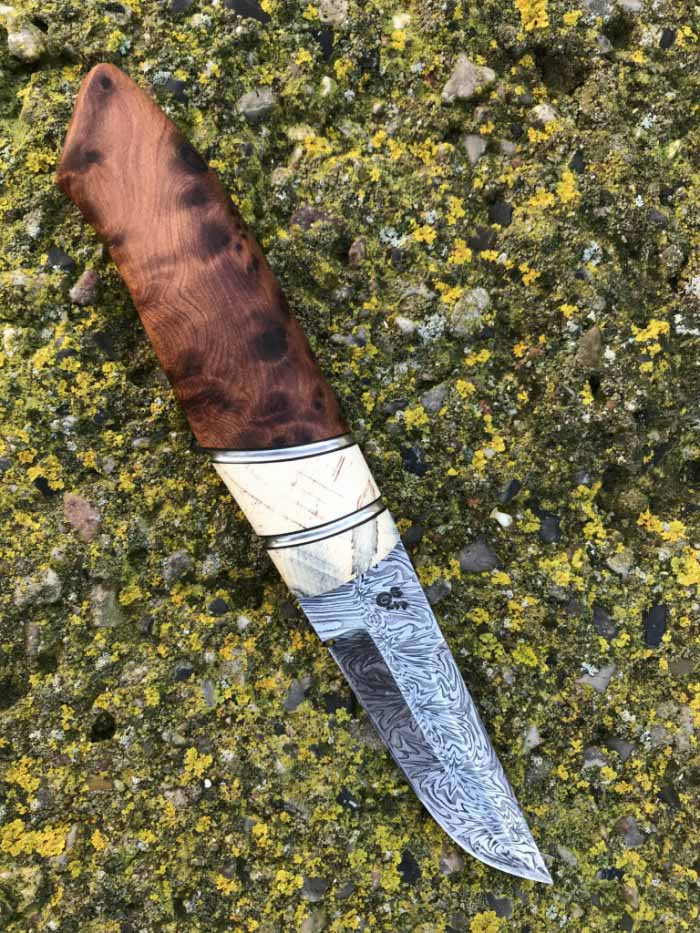
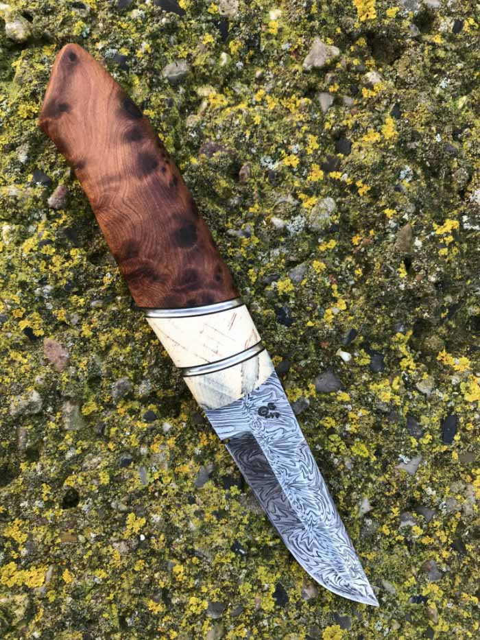

See more ↓
Passion for knives
Welcome to my website, which mainly contains my production of handmade knives and leather goods.
It has become my great passion to manufacture my knives and leather sheaths myself. I therefore spend many hours in my spare time working with the blades ranging from the design to what products to use and to which blade. If I find something in nature, such as an oak knot or a large bullet, then it comes home to the workshop.
Look around and be inspired. I would like to design a knife according to your wishes, provided you fill out the form below contact, then I will return with free advice.
 



Other accessories in leather goods
Of course, as an accessory to my knives, I have also designed and manufactured leather sheaths. However, I have been inspired to make other leather items such as bags, bracelets, cases for passports, key chains etc. Here on this page you will find a selection of the products I have made in leather.
All my leather goods are stamped with a thistle as a logo as it is Scotland's national flower. The flower therefore means a lot to me.